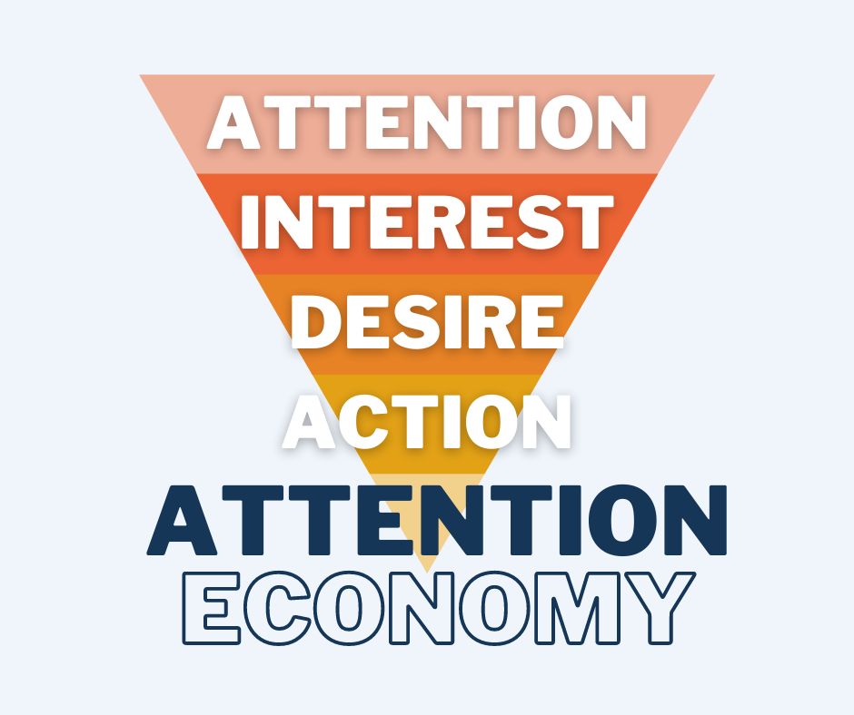

What is disinformation?
The founding president of Facebook, Sean Parker, explained that when Facebook was being developed the objective was: “How do we consume as much of your time and conscious attention as possible?”
In this era of information explosion, attention has become a scarce and precious asset. For all the brands, companies, and politicians to gain traction on social media platforms, they need to capture YOUR attention. This is often accomplished by creating and disseminating compelling information on the platform, even if the information is not entirely true.
Fake news ≠ Disinformation
Fake news ≠ Disinformation While the information might not be true, it might not be “Fake news”.
The term “fake news” has been trending since 2016:purposefully crafted, sensational, emotionally charged, misleading or totally fabricated information that mimics the form of mainstream news. Fake news is a form of disinformation: information that is false and deliberately created to harm a person, social group, organization or country.
So most of the time, when you see a suspicious message on social media, it is most likely to be a disinformation campaign. While fake news might be really damaging, disinformation campaigns are harder to hold accountable for.
Social media and micro-targeting
Facebook, Google and other big tech companies are monitoring your behavior. Every post liked, every keyword searched, every LED advertising board that catches your eye and every video you browse online… These companies are all collecting your data, and using it to analyze, categorize and predict your behavior.
Armed with this data, marketing firms are able to target you with their ads, or ads disguised as information. These ads could make you buy stuff you don’t need, or influence who you vote for.
In addition, the algorithms of social media have also exacerbated the widespread dissemination of disinformation. In a state of information overload, people's limited energy can only process the messages that best capture their attention -- especially when these messages are likely to incite and inspire fear.
Echo Chamber and Polarization
Research has found that users tend to gravitate to like-minded people on social media, creating what we call an echo chamber, in which it is difficult for users to obtain information from someone they don’t like, or who doesn’t think like them.
To amplify human bias more, search engines and social media platforms provide personalized recommendations based on the data they collected from user’s previous behavior. Therefore prioritize information in your feeds that you are most likely to agree with. This makes us easy targets for polarization. Algorithms and human nature together create polarization, and this is exacerbated by disinformation.
Summary
To summarize, it is difficult to resist disinformation because it conforms to the nature of human behavior and cognitive bias. With the help of algorithms, disinformation has become a major challenge in this digital age. Many organizations are working hard to fight against this issue, however, this problem may not be solved once and for all due to the complexity of human beings. Even so, when you encounter somebody who believes a piece of disinformation, try to empathize with them. Because more human interaction, more facts, more conversation and mutual understanding are the only solutions to reduce the impact of disinformation and prevent our society from becoming more polarized.